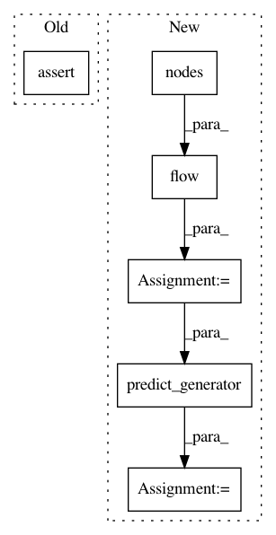

145170ca9bbd89aa01d8a40841e3c039d3683af8,tests/layer/test_graph_attention.py,Test_GAT,test_gat_node_model_no_norm,#Test_GAT#,404
Before Change
assert len(gat.node_model()) == 2
x_in, x_out = gat.node_model()
assert len(x_in) == 2
assert int(x_in[0].shape[-1]) == self.F_in
assert x_in[1]._keras_shape == (None, G.number_of_nodes())
assert int(x_out.shape[-1]) == self.layer_sizes[-1]
model = keras.Model(inputs=x_in, outputs=x_out)
After Change
model = keras.Model(inputs=x_in, outputs=x_out)
ng = gen.flow(G.nodes())
actual = model.predict_generator(ng)
expected = np.ones((G.number_of_nodes(), self.layer_sizes[-1])) * (
self.F_in * self.layer_sizes[0] * self.attn_heads
)
In pattern: SUPERPATTERN
Frequency: 3
Non-data size: 6
Instances
Project Name: stellargraph/stellargraph
Commit Name: 145170ca9bbd89aa01d8a40841e3c039d3683af8
Time: 2019-06-03
Author: andrew.docherty@data61.csiro.au
File Name: tests/layer/test_graph_attention.py
Class Name: Test_GAT
Method Name: test_gat_node_model_no_norm
Project Name: stellargraph/stellargraph
Commit Name: 145170ca9bbd89aa01d8a40841e3c039d3683af8
Time: 2019-06-03
Author: andrew.docherty@data61.csiro.au
File Name: tests/layer/test_graph_attention.py
Class Name: Test_GAT
Method Name: test_gat_node_model_l2norm
Project Name: stellargraph/stellargraph
Commit Name: 145170ca9bbd89aa01d8a40841e3c039d3683af8
Time: 2019-06-03
Author: andrew.docherty@data61.csiro.au
File Name: tests/layer/test_graph_attention.py
Class Name: Test_GAT
Method Name: test_gat_serialize